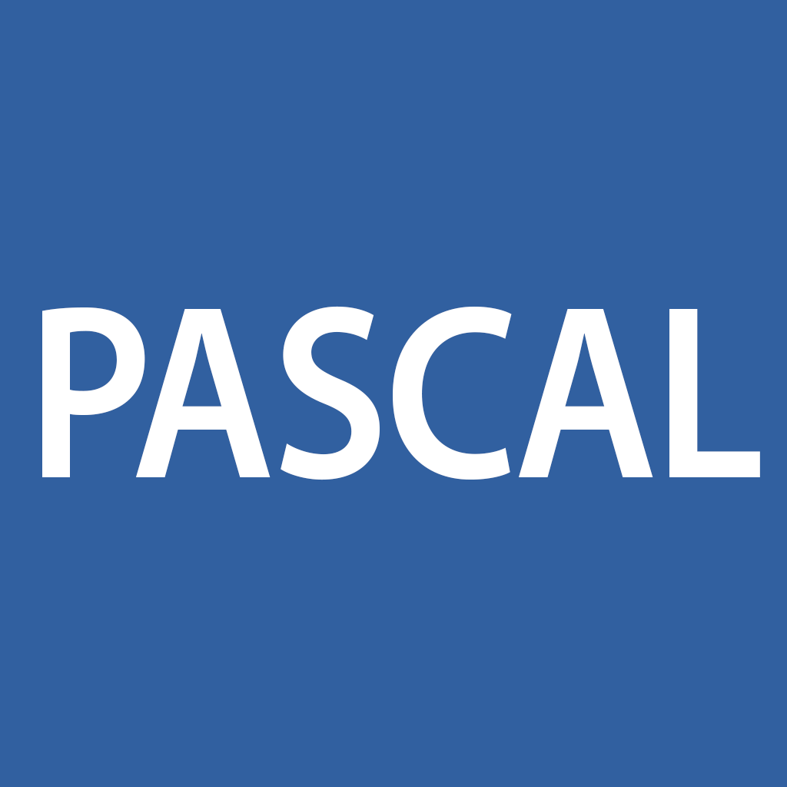

Podržani jezici na takmičenju:
C++
C++ je jedan od najboljih jezika i nastao je 1970ih. Veoma se često koristi danas i jedan je od najbržih jezika. Ako ne želite da koristite Python, koristite C++.

Python
Python je jedan od najpopularnijih jezika danas. Poznat je po lakoj sintaksi. Na ovom sajtu će se koristiti Python.

Pascal
Pascal je star jezik i retko se koristi. Pascal se danas koristi kao program za obuku budućih programera, naročito onih koji će da rade na programskom jeziku C.